Мастерства ремесла¶
Варианты, которые выбираются на узлах мастерства. Каждый вариант указан один раз, с числом узлов дерева, которые его предлагают; откройте вариант, чтобы увидеть полное описание и где его найти.
Дровосек¶
| Вариант | Эффект | Узлы | |
|---|---|---|---|
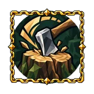 |
Ancient Grain | Extra wood rolls 2 times on ancient, fine and Yggdrasil wood | 16 |
| Clean Felling | Trees you fell leave no stump: the wood the stump would give drops together with the trunk | 16 | |
| Clean Trunk | A tree your axe beats by two tiers falls in one blow | 16 | |
| Guided Fall | A tree you fell always falls the way you were looking at your last hit | 16 | |
| Seed Scatter | An Extra seed from Chopping can turn out to be a random tree seed from a biome whose boss you have defeated, not only the seed of the tree you are chopping | 16 | |
| Steady Series | Every hit of a chopping series knocks out an Extra log | 16 | |
| Stump Breaker | An axe's alternate attack splits any stump in one blow | 16 | |
| Timber Luck | A falling tree cannot kill you: the damage lands, but you are left at 1 health. | 16 |
Земледелец¶
| Вариант | Эффект | Узлы | |
|---|---|---|---|
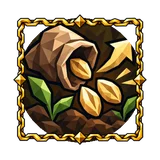 |
Bed Watch | Aiming at a plant in your beds shows how long it has left until it ripens | 12 |
| Broad Sowing | Mass planting: hold {0} and a whole bed goes in at once. With {0} the wheel rotates the bed, with {0} and Alt it changes the spacing between plants | 12 | |
| Irrigation | ×2 скорости роста посевов и саженцев Own crops grow faster |
12 | |
| Quick Replant | Picking a crop plants it again on the spot, if you carry its seed | 12 | |
| Scarecrow | Crops near your buildings are not trampled or eaten | 12 | |
| Tight Beds | Plants need 50% of the usual spacing when planted | 12 | |
| Любая земля | Planted growth grows in any biome. Cultivated ground and growing space are still required | 12 |
Искатель реликвий¶
| Вариант | Эффект | Узлы | |
|---|---|---|---|
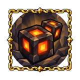 |
Belt Lantern | The Dvergr lantern hangs on your belt in its own equipment slot | 11 |
| Breadcrumbs | Inside a dungeon the minimap draws the corridors you have walked, in the game's own map style | 11 | |
| Chest Sight | Chests in your view radius are marked on the map | 11 | |
| Dungeon Sight | Dungeon entrances within your view radius are marked on the map and minimap; the marks clear as soon as they leave that radius | 11 | |
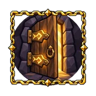 |
Every Door | Any door, built or in a dungeon, opens as you come up to it and closes behind you. A door with a key still needs the key in your bag. | 11 |
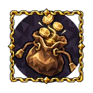 |
Magic Purse | A purse appears to the right of the inventory and collects your coins. Coins in the purse weigh nothing and are kept on death. | 11 |
| Return Path | Раз за подземелье при посадке предлагается перелёт к его выходу за 3 ядер суртлингов Once per dungeon, sit down to fly to its exit for 3 surtling cores. If the dungeon is reset, the flight is available again. |
11 | |
| Second Sweep | Chests anywhere in the world that the character has emptied fully refill after a few in-game days, again and again, with fresh loot of their biome (Chest item quantity, Chest item rarity and Extra item apply). Aiming at such a chest shows the time left until it refills | 11 | |
| Tidy Pack | Two buttons in the bag: stack into nearby chests and sort the bag | 11 | |
| Treasure Map | Открытие сундука с шансом 30% отмечает на карте ближайший неоткрытый сундук; метка пропадает, когда сундук опустошён Opening a chest has a 30% chance to mark the nearest unopened chest on the map |
11 |
Кожевник¶
| Вариант | Эффект | Узлы | |
|---|---|---|---|
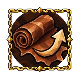 |
Auto Repair | Interacting with any crafting station repairs on its own every item that station can repair | 11 |
| Balanced Grip | Собственноручно изготовленное оружие требует на 10% меньше выносливости для атаки для снаряжения кожевника Crafting or upgrading weapons using Tanner materials has a 25% chance to add an item affix that reduces their attack stamina cost. Each eligible mastery rolls independently. |
11 | |
| Fitted Set | Allows upgrading Tanner equipment one quality level beyond its normal maximum. Items without upgrades remain unupgradeable. Both profession masteries on a mixed recipe extend its limit only once. Station and material requirements still apply. | 11 | |
| Loom Chain | Spinning wheels pull flax from nearby chests, with the bonuses of the chest owner | 11 | |
| Nearby Chests (equipment) | Crafting and upgrading equipment - weapons, armour, shields and tools - can use materials from accessible nearby chests. | 21 | |
| Padded Fit | Собственноручно изготовленная броня весит на 25% меньше для снаряжения кожевника Crafting or upgrading light armour has a 25% chance to add an item affix that reduces its weight. Each eligible mastery rolls independently. |
11 |
Корабельщик¶
| Вариант | Эффект | Узлы | |
|---|---|---|---|
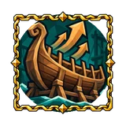 |
Deep Hold | Ships you built carry one more row of cargo | 19 |
| Harbor Mark | Your ships are marked on the map with a ship icon wherever they are | 19 | |
| Open Shipyard | Ships can be built and taken apart with the hammer anywhere, without a workbench. Away from a workbench a ship is not broken into materials: it is packed into a crate together with its cargo, and the crate on the hotbar sets the same ship back on the water - with its hull, its builder, every shipwright property and everything that was in its hold. Nobody may stand aboard a ship being taken apart. | 19 | |
| Salvage Float | Nothing is lost to the sea: a ship's hold and items sunk in deep water float up in crates that stay put and are marked on the map until emptied | 19 | |
| Storm Keel | Ships you built keep full control in storms | 19 | |
| Weather Sense | The coming weather and when it arrives are shown under the minimap | 19 | |
| Починка в пути | Ships can be repaired with the hammer without a workbench nearby | 19 | |
| Якорь | Ships the character builds carry an anchor: anyone aiming at the helm drops or raises it with Shift+E. An anchored ship holds its place, still rocking on the waves and turning with the wind. | 19 |
Кузнец¶
| Вариант | Эффект | Узлы | |
|---|---|---|---|
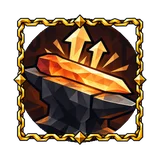 |
Balanced Blade | 10% увеличение урона для снаряжения кузнеца Crafting or upgrading weapons using Smith materials has a 25% chance to add an item affix that increases their damage. Each eligible mastery rolls independently. |
10 |
| Chest Feed | Smelters and kilns pull ore and coal from nearby chests on their own, with the bonuses of the chest owner. Placing a smelter shows the pull radius with the same ring as crafting from nearby chests. Works with every smelter, kiln and chest in the game | 10 | |
| Fitted Plate | 10% увеличение брони для снаряжения кузнеца Crafting or upgrading heavy armour has a 25% chance to add an item affix that increases its armour. Each eligible mastery rolls independently. |
10 | |
| Forge Comfort | 3% увеличение скорости плавки и обжига угля за каждую единицу комфорт Smelters, kilns and forges near you work faster with every point of comfort, the way hives do |
10 | |
| Master's Mark | Allows upgrading Smith equipment one quality level beyond its normal maximum. Items without upgrades remain unupgradeable. Both profession masteries on a mixed recipe extend its limit only once. Station and material requirements still apply. | 10 | |
| Whetstones | В кузне можно делать точильные камни. ПКМ по камню, затем ЛКМ по экипировке восстанавливает 25% прочности, до уровня металла камня. You can craft whetstones: a consumable that repairs the weapon or tool in your hands by 25%, away from any workbench. Each metal tier has its own whetstone |
10 |
Кулинар¶
| Вариант | Эффект | Узлы | |
|---|---|---|---|
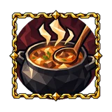 |
Batch Cook | Placing raw food on a cooking station fills every free spot at once from your inventory | 11 |
| Double Pot | The cauldron cooks two recipes at once | 11 | |
| Fresh Kitchen | Your own cooking does not degrade: full bonuses until the end of its duration | 11 | |
| Hearth Comfort | 3% увеличение скорости готовки за каждую единицу комфорт Cooking stations near you cook faster with every point of comfort, the way hives do |
11 | |
| Kitchen Bell | Food on your cooking stations rings when it is done and is marked on the minimap until you take it | 11 | |
| Бдительный повар | Food on the hearth no longer burns | 11 |
Медовар¶
| Вариант | Эффект | Узлы | |
|---|---|---|---|
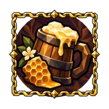 |
Aged Mead | Медовухи, пролежавшие день в своём сундуке, получают 20% к силе Meads kept a day in a chest you built gain 20% more potency |
16 |
| Brewmaster's Eye | Time left is shown on every fermenter | 16 | |
| Double Batch | A fermenter you built holds two batches at once | 16 | |
| Open-Air Cellar | Fermenters you built work under open sky | 16 | |
| Strong Cask | Meads you brewed stack 2 times as high | 16 | |
| Taste Test | Выпитая своя медовуха с шансом 20% не расходуется Drinking a mead you brewed has a 20% chance not to use it up |
16 |
Охотник¶
| Вариант | Эффект | Узлы | |
|---|---|---|---|
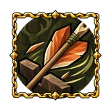 |
Bait | Брошенные ягоды или грибы приманивают пасущихся животных, сырое мясо — хищников: до 3 обитателей биома в пределах 100 м на 60 с; одна приманка за раз Throw berries or mushrooms to draw deer and boars, raw meat to draw predators. Animals of that biome within 100 m come to the bait: at most 3, or one pack, and none from far above or below. One bait at a time; it lasts 60 s or until eaten |
10 |
| Field Dressing | Hides and meat from your kills go straight into your inventory | 10 | |
| Nearby Chests (supplies) | Crafting supplies - ammo, bombs, food, mead, oils and materials - can use materials from accessible nearby chests. | 37 | |
| Pack Hunter | Tamed wolves near you bring the hides of their kills to you | 10 | |
| Rare Sight | Rare and unique creatures within your view radius are marked on the map and minimap; the marks clear as soon as they leave that radius | 10 | |
| Tracker's Eye | You see animal tracks | 10 | |
| Чистое убийство | A beast killed in one hit always drops its trophy | 10 |
Охотник за головами¶
| Вариант | Эффект | Узлы | |
|---|---|---|---|
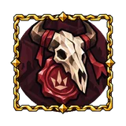 |
Unnamed mastery | Reserved: this profession is not designed yet. Не реализовано |
10 |
Пчеловод¶
| Вариант | Эффект | Узлы | |
|---|---|---|---|
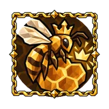 |
Cosy Hives | 3% увеличение скорости наполнения улья за каждую единицу комфорт Hives fill faster the more comfort there is around them |
12 |
| Guard Bees | Bees sting enemies near your hives | 12 | |
| Hive Chain | Harvesting a hive collects from neighbouring hives one after another, hive by hive along the chain, not by area | 12 | |
| Honey Stores | Hives you built hold 2 times as much honey | 12 | |
| Swarm Split | Раз в день полный свой улей с неснятым мёдом с шансом 5% даёт пчелиную матку Once a day a hive you built that is full, with its honey not yet taken, has a 5% chance to yield a queen bee |
12 | |
| Wildflower Meadow | Свои ульи наполняются на 5% быстрее за каждое цветущее растение рядом (одуванчик, чертополох, лён, ячмень), до 50% Hives you built fill faster for every flowering plant growing nearby (dandelion, thistle, flax, barley) |
12 | |
| Winter Hive | Hives you built work in cold biomes | 12 |
Рудокоп¶
| Вариант | Эффект | Узлы | |
|---|---|---|---|
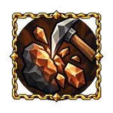 |
Cascade | Расколотая залежь с шансом 5% раскалывает случайную залежь рядом; каждый такой раскол бросает шанс снова Shattering a deposit has a 5% chance to Shatter a random deposit nearby. The chance cascades: each deposit it Shatters rolls again, so with enough luck a whole mine bursts in a chain |
17 |
| Clean Split | A seam your pickaxe beats by two tiers shatters in one blow | 17 | |
| Focused Seam | Weak spots of the mining mini-game appear only on the deposit being mined | 17 | |
| Hidden Vein | 5% шанс, что удар по камню выбьет случайную руду биома, чей босс повержен 5% chance that Mining stone knocks out a random ore from a biome whose boss you have defeated |
17 | |
| Ore Portals | Ore and metal bars pass through portals once the boss of their biome is dead; the portal keeps a share of what passes (25%). • Copper, tin, bronze — The Elder • Iron — Bonemass • Silver — Moder • Black metal — Yagluth • Flametal — Fader |
17 | |
| Ore Sight | Ore deposits within your view radius are marked on the map and minimap; the marks clear as soon as they leave that radius | 17 | |
| Precise Strike | Every hit into a weak spot also yields an extra share of the deposit’s ore. | 17 | |
| Smelted Lode | 5% шанс, что руда выпадет уже выплавленной, слитком 5% chance that ore drops already smelted, as its bar |
17 |
Рунорез¶
| Вариант | Эффект | Узлы | |
|---|---|---|---|
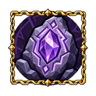 |
Ascendant Rune | +10% шанс, что свойство, добавленное руной, поднимется на ступень When a rune adds or raises a property, it has a chance to rise one tier more as a separate step, beyond the item's level limit. You see a second flash, hear a chime and read "+1 affix tier". |
11 |
| Azurite Sight | Azurite veins within your view radius are marked on the map and minimap: plain, corrupted and divine each with its own icon. A vein mined out by more than three quarters is no longer marked. | 10 | |
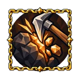 |
Chisel Quarrying | Rune chisels also mine stone and ore deposits, like a pickaxe of the same metal: bronze, iron or black metal (flametal hits as hard as black metal). A deposit too hard for that pickaxe is too hard for the chisel. Chisel hits do not train the Pickaxes skill. Azurite veins are mined as before. | 10 |
| Divine Touch | +2% шанса божественного азурита Each chisel hit on a plain azurite vein outside the mist has a chance to turn it divine, with the same lightning as a heavenly strike. Any chisel works, in any biome. |
11 | |
| Inscription Gate | You can build the Inscription Gate, a Runecarver portal with pink-violet runes. Shift + use on it opens the map of every portal in the world: pick one and inscribe the link, and everyone who enters the gate steps out there. | 10 | |
| Perfect Inscription | +10% шанс, что свойство, выпавшее от руны, получит наибольшее значение своей ступени A property rolled by a rune (Fate included) has a chance to take the highest value of its tier. |
11 | |
| Portal Crate | Away from a workbench, dismantling a portal packs it into a crate that keeps its tag, author, durability and Inscription Gate link. Place it back from the crate anywhere. A crate cannot pass through a portal. | 10 | |
| Relic Passage | Dragon eggs for summoning, Hildir's chests and dvergr parts (charred cogwheels, dvergr needles, mechanical springs) go through portals, with no portal toll. Ore and metal are not included. | 10 | |
| Vacuum Chest | Unlocks the Vacuum Chest at the Rune Carver Table. It takes finished goods from smelters, kilns, spinning wheels and windmills around it and feeds them from its contents. Shift + mouse wheel sets the radius, Shift + E the kind of goods it collects. | 10 |
Рыбак¶
| Вариант | Эффект | Узлы | |
|---|---|---|---|
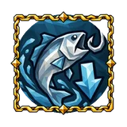 |
Deep Cast | Fishing cast range is 2 times longer | 12 |
| Line Keeper | The fishing line never snaps | 12 | |
| Native Bait | Fishing needs no bait and never spends it, even when you carry bait: every fish at the float bites as if on its own bait, ocean included. No boss kill is required. | 12 | |
| Quick Haul | Рыба на крючке ближе 5 м вытаскивается сразу, без борьбы A fish pulled closer than 5 m comes out at once, without the fight |
12 | |
| Sea Legs | Fishing from a ship never tips the rod | 12 | |
| Shoal Sight | Fish shoals in your view radius are marked on the map | 12 |
Скотовод¶
| Вариант | Эффект | Узлы | |
|---|---|---|---|
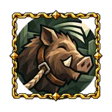 |
Any Beast | You can tame any animal | 8 |
| Any Saddle | You can ride any tamed creature, including ones the game cannot saddle (a wolf and so on) | 8 | |
| Beast Bearer | Crouch and use a small tamed animal to carry it in your arms, through portals too; crouch and use again to set it down | 8 | |
| Beast Portal | Tamed animals that follow you go through portals and dungeon entrances with you | 8 | |
| Draft Animals | Tamed animals can be harnessed to a cart and pull it after you. Each animal keeps its own stats: a wolf is quick but pulls little, a lox is slow and pulls a lot. Design to be worked out | 8 | |
| Herd Call | Команда одному прирученному животному передаётся всем прирученным в пределах 30 м; спутник, оставшийся дальше, остаётся на месте Tamed animals within 30 m follow you as a group; step farther away and they stay behind, so you can break off |
8 | |
| Stable Keeper | Tamed animals near a building you built stay fed 2 times as long | 8 |
Следопыт¶
| Вариант | Эффект | Узлы | |
|---|---|---|---|
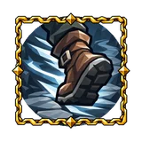 |
Field Portal | You can build and dismantle portals without a workbench | 13 |
| Grave Tether | When you die, your equipped gear, hotbar and food slots stay on you, and your grave is marked on the map until it is emptied | 13 | |
| Momentum Slide | Crouch while running fast or right after landing a jump to slide along the ground, keeping your speed. | 13 | |
| Night Walker | Every at Night bonus, combat and crafting alike, also works in the evening | 13 | |
| Pull-Up | Hold jump and push toward a wall while in the air to pull yourself up onto a ledge within reach. A pull-up costs 15 stamina, a low ledge half as much. A short tap of jump near a wall stays a wall rebound. | 13 | |
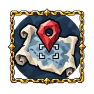 |
Quick Mark | Shift + Y marks what you are looking at on your map with its own icon and name | 13 |
| Trail Runner | Бег по тропе или мощёной дороге требует на 25% меньше выносливости Running on a trail costs 25% less stamina |
13 | |
| Общая карта | Standing near another player, you exchange explored map and pins with them | 13 | |
| Скольжение по склону | Crouched on a slope, the character rides down faster than running. | 13 | |
| Сон у костра | You can sleep sitting at a fire: no bed and no roof needed, and the night passes even if someone on the server has not lain down | 13 |
Собиратель¶
| Вариант | Эффект | Узлы | |
|---|---|---|---|
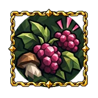 |
Cuttings | Сбор дикого растения с шансом 6% даёт его семя; дикие растения сажаются только из своих семян Foraging a wild plant has a 6% chance to give its seed. Wild plants have seeds of their own now, and this mastery is the only way to get them |
9 |
| Double Pick | Всё собранное руками (ягоды, грибы, ветки, камни, смола, мёд) с шансом 15% даётся вдвойне Anything you pick up by interacting (berries, mushrooms, branches, stones, tar, honey) has a 15% chance to give twice |
9 | |
| Forager's Nose | You smell berries, mushrooms and flowers: faint streaks drift toward you from the nearest ones | 9 | |
| Night Forager | At night, pickables near you glow and give 1 extra | 9 | |
| Snacking | Сырые ягоды и грибы съедаются как перекус: половина эффекта, без занятия слота еды; не больше 3 разных перекусов разом Raw berries and mushrooms you eat give their effect at 50% strength without taking a food slot, up to 3 at once |
9 | |
| Weightless Forage | Foraging materials weigh nothing while they are in your inventory | 9 | |
| Windfall | While you are in the air, everything below you is shaken loose: berries, mushrooms and branches fall to the ground and hives give up their honey , you still have to pick it all up yourself Tar pits count too. | 9 | |
| На ходу | Picking bushes, branches, stones and other resources does not stop a run: the hands reach for the find while the legs keep running. | 9 |
Строитель¶
| Вариант | Эффект | Узлы | |
|---|---|---|---|
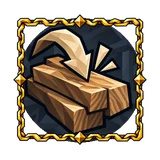 |
Auto Doors | Doors you build open as anyone approaches and close behind them | 10 |
| Hugin's Flight | Клавиша {key.hugin} с инструментом строительства в руках поднимает взгляд ввысь, как Хугин: тело зависает на месте, а детали ставятся в пределах дальности строительства от ворона, до 30 м от тела With a hammer or hoe in hand, press B to send your sight aloft like Odin's raven and build from the air while your body stays safe on the ground. The view flies up to 30 m from you; pieces are placed within your Building range of the view and still need a workbench in reach and your materials |
10 | |
| Light Frame | Pieces you built lose only 50% of the usual support | 10 | |
| Nearby Chests (building) | Building draws materials from nearby chests | 10 | |
| No Bounds | Build and remove pieces where building is forbidden: dungeons, boss altars, traders' camps and other no-build places | 10 | |
| Open-Air Bench | The bench works under open sky | 10 | |
| Weatherproof | Pieces you built take no damage from rain, water or waves | 10 | |
| Бережный строитель | Вы не можете наносить урон постройкам игроков | 10 | |
| Пол как крыша | Floors you build are a full roof: what is under them stays dry, is sheltered from rain and counts as under a roof for fires, beds, rest and stations | 10 |
Данные из Path of Valheiman 5.3.6, извлечены 2026-10-27.